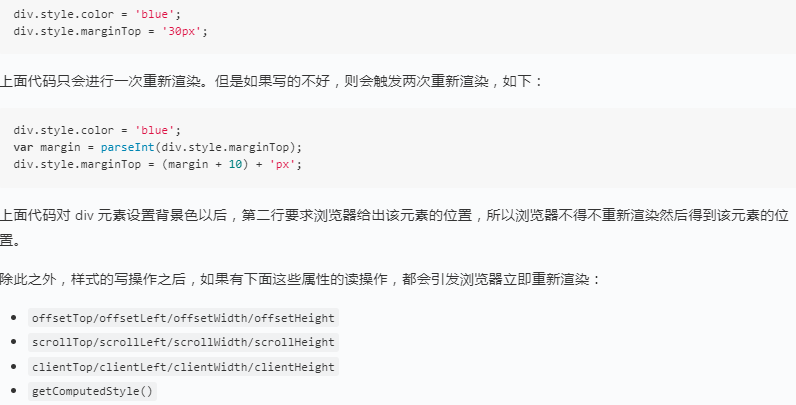
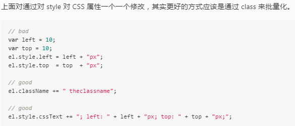
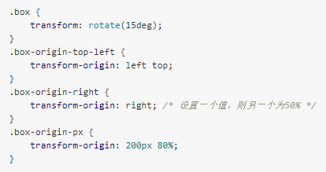
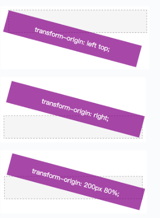
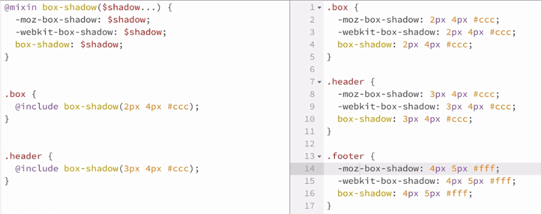
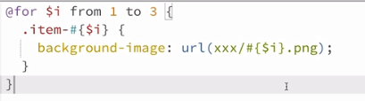
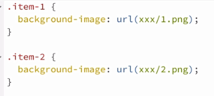

Web前端之旅渲染/动画/响应式/预处理~_~
浏览器渲染
简单来说，浏览器的渲染过程其实就是将页面转换成像素显示到屏幕上，大致有如下几个步骤：

• Javascript操作： 一般来说，我们会使用 JavaScript 来实现一些交互操作。比如用往页面里添加一些元素，切换显示隐藏等
• style 样式计算： 该过程根据 CSS 选择器，获取每个元素匹配的 CSS 样式并计算其最终应用样式
• Layout 布局：该过程计算元素要占据的空间大小及其在屏幕的位置。网页的布局模式意味着一个元素可能影响其他元素，例如 <body>元素的宽度一般会影响其子元素的宽度以及树中各处的节点，因此对于浏览器来说，布局是经常发生的
• Paint 绘制：本质上就是填充像素的过程。包括绘制文字、颜色、图像、边框和阴影等。也就是绘制元素所有的可视效果
• Composite 渲染层合并：在每个层上完成绘制过程之后，浏览器会将所有层按照合理的顺序合并成一个图层，然后显示在屏幕上
CSS 的属性大致分为三类：布局类（layout），绘制类（paint），合成类（composite）。
一个页面渲染完毕后，随着用户的操作，或者数据变化，网页还会进行重新渲染。根据不同的触发条件，重新渲染分为两种情况：重排（reflow）和重绘（repaint）。
重排（reflow）
由元素的布局类属性改变所触发的行为过程，称为 reflow，也叫做 relayout（重新布局）。当某个节点 reflow 时会重新计算节点的尺寸和位置，还可能会引起其它节点的 reflow。
触发重排的场景~
盒子模型相关属性会触发重布局：
width/height/padding/margin/display/border-width/border/min-height
定位属性及浮动也会触发重布局：
top/bottom/left/right/position/float/clear
改变节点内部文字结构也会触发重布局：
text-align/overflow-y/font-weight/overflow/font-family/line-height/vertival-align/white-space/font-size
重排（reflow）
由绘制类属性改变触发节点重新绘制其可视觉效果的过程，称为 repaint。
触发重绘的场景~
修改时只触发重绘的属性有：
color/border-style/border-radius/visibility/text-decoration/background/background-image/background-position/background-repeat/background-size/outline-color/outline/outline-style/outline-width/box-shadow
通常情况下，重排的影响更大，重排会导致文档局部或全部的重新运算：重新计算元素位置，大小。（改变一个元素的布局，可能会影响很多个元素的布局）， 不管是重绘还是重排导致的重新渲染，都会阻塞浏览器。重新渲染的的过程中，JavaScript 会被阻塞，用户的交互行为也会被卡住。复杂的 CSS 动画甚至会拖慢 JavaScript 的运行速度。
如果想了解更多 CSS 中会影响 Layout、Paint 和 Composite 的属性，可参考：CSS Triggers
优化技巧
所有的最佳实践都是围绕尽最大可能的降低重绘和重排的频率，来达到减少重新渲染的目的。
• 减少动画元素
减少动画元素，是动画性能优化中首先需要完成的。通过审查页面动画 DOM 元素结构，去除不必要的动画元素，减少元素的数量，相应地会减少布页面局和绘制的时间。
• 尽量使用 fixed、absolute 定位
尽量使用用 fixed、absolute 定位方式，避免影响到其他节点重排，开销会比较小
• 尽量只改变transform和opacity
能用 transform、opacity 优先使用，其属性的改变不会发生重排和重绘。如位移操作的，可以使用translate 来实现，渐隐渐现效果可以使用 opacity 属性来实现。
• 恰当开启硬件加速效果
对动画元素应用transform: translate3d(0, 0, 0)、will-change: transform 等来开启硬件加速。通常开启硬件加速可以让动画变得更加流畅。但这里需注意，在不需要的时候需去掉避免过多的内存消耗。
• 其他方法
CSS属性的读、写操作分开，例如：

通过class或csstext来批量更新样式，例如：

DOM 样式离线更新：尽量使用离线 DOM，而不是真实的网页 DOM 来改变元素样式。比如，操作 Document Fragment对象，完成后再把这个对象加入 DOM。再比如，使用 cloneNode() 方法，在克隆的节点上 进行操作，然后再用克隆的节点替换原始节点。
使用 display: none 进行样式批量更新：先将元素设为 display: none（需要1次重排和重绘），然后对这个节点进行100次操作，最后再恢复显示（需要1次重排和重绘）。这样一来，你就用两次重新渲染， 取代了可能高达100次的重新渲染。
将元素设置为不可见：只在必要的时候，才将元素的 display 属性为可见，因为不可见的元素不影响重排和重绘。另外，visibility : hidden 的元素只对重绘有影响，不影响重排。
调节 js 运行帧率：使用 window.requestAnimationFrame()、window.requestIdleCallback() 这两个方法调节重新渲染的频率。
减少样式的更新频率：使用虚拟 DOM 脚本库，比如 React 等。
慎用 table 布局：table 的单元格具有非常好的自适应特性，但是同时代价也很高，能不用就不用。如果非要使用 table ，给 table 添加 table-layout: fixed 属性，这个属性的目的是让后面单元格的宽 度由表头的宽度来决定——减少布局的计算量。
更多阅读
动画
动画分两种：transition---补间动画（浏览器自动帮补齐中间的状态）和animation---帧动画（利用关键帧定义中间态）
transition
不支持动画的一些属性：
background-image(a.png -> b.png)
float(none -> left)
width/height(auto -> 10px)
display(none -> block)
visibipty(hidden -> visible)
position(static -> absolute)
transition的四个属性：
transition-property 属性
transition-duration 持续时间
transition-timing-function 动效
transition-delay 延迟时间
动画必备属性transfrom：
transform 本意是变形、变换之意，在 CSS 中使用该属性可对元素进行移动（translate）、旋转（rotate）、缩放（scale）、倾斜（skew）等效果。因其有着各种特效及优良的性能，所以成为动画的标配。
二维（2D）变换
• translate
语法：transform: translate(tx[, ty])。其中 tx 表示 x 方向偏移，ty 表示 y 方向偏移，如果 ty 没有指定值则为0。
可分拆为：transform: translateX(tx) 或 transform: translateY(ty)
注：tx，ty 如果为百分比值的话，其参考计算的是元素本身的宽和高，而不是父元素的宽和高。所以经常使用该方法设置定位居中，代码如下：
.demo {position: absolute;top: 50%; /* 父元素高度的一半位置 */left: 50%; /* 父元素宽度的一半位置 */transform: translate(-50%, -50%); /* 元素本身的一半宽、高 */}
• scale
语法为：transform: scale(sx[, sy])。其中 sx 表示 x 方向的缩放比例，sy 表示 y 方向的缩放比例，如果 sy 没有指定值则与 sx 相等。
可拆分为：transform: scaleX(sx) 和 transform: scaleY(sy)
• rotate
语法为：transform: rotate(angle)。angle 表示顺时针角度。
• skew
语法为：transform: skew(ax[, ay])。其中 ax 表示 x 方向的顺时针角度，ay 表示 y 方向的顺时针角度，如果 ay 没有指定值则 y 方向没有倾斜。
复合变换
上面几个变换，都可以自由组合形成更复杂的复合变换，如：
.box {transform: translate(30px) rotate(10deg) skew(0, 5deg);}
变换中心点
默认上面所有的变换都是以元素的中心位置为参考原点的，不过我们可以通过属性 transform-origin 来改变参考原点。
语法为：transform-origin: ox oy。其中 ox 表示 x 方向的位置，可使用 left、right、center、<length>、<percentage>，oy 表示 y 方向的位置，可使用top、bottom、center、<length>、<percentage>。如果只传入一个值，则另一个值默认为 50%。
 
三维（3D）变换
3D 变换大概有如下几种使用方法：
• transform: translate3d(12px, 50%, 3em);
• transform: translateZ(2px);
• transform: scale3d(2.5, 1.2, 0.3);
• transform: scaleZ(0.3);
• transform: rotate3d(1, 2.0, 3.0, 10deg);
• transform: rotateX(10deg);
• transform: rotateY(10deg);
• transform: rotateZ(10deg);
• transform: perspective(17px);
• transform: matrix3d(1.0, 2.0, 3.0, 4.0, 5.0, 6.0, 7.0, 8.0, 9.0, 10.0, 11.0, 12.0, 13.0, 14.0, 15.0, 16.0);
推荐几篇入门文章如下：
缓动函数transition-timing-function
以下是简例和缓动函数速查表：
animation
animation属性：
• animation-name 名称
• animation-duration 持续时间
• animation-timing-function 动效
• animation-delay 延迟时间
• animation-iteration-count 次数
• animation-direction 方向
• animation-fill-mode 动画的开始与结束的帧样式
• animation-play-state 动画状态（暂停或运行）
一个小实例：
关键帧语法解析：
@keyframes circleRun2 { from { transform: translate(0, 75px); } 33% { transform: translate(150px, 75px); } 66% { transform: translate(400px, -75px) } to { transform: translate(550px, 0); background: red; } }
.circle2 {animation-name: circleRun2;animation-delay: 2s;animation-fill-mode: backwards;animation-play-state: paused;}
transition动画和animation动画的异同
transition：需要借助交互（:hover/:active/:checked/:focus）、add/remove class，只能定义第一帧和最后一帧的样式。
animation：既可自动也可借助交互、可以控制多帧、可以控制暂停播放。
60fps 与设备刷新率
目前大多数设备的屏幕刷新率为60fps（Frame per Second），即每秒60帧。因此，如果在页面中有一个动画或渐变效果，或者用户正在滚动页面，那么浏览器渲染动画或页面的每一帧的速率也需要跟设备屏幕的刷新率保持一致，即每一帧要在16 毫秒（1S/60 = 16.66ms）之内完成。如果无法完成，由于帧率的下降会导致内容在屏幕上抖动。此现象通常称为卡顿，会对用户体验产生负面影响。
常见 CSS 动画库
一些好用的 CSS 动画库，既可以用来学习也可用来提高工作效率
Animate.css 是最早的也是目前最流行和最易于使用的CSS动画库之一，其包含了60多款不同类型的 CSS 动画如晃动、闪动、淡出淡出效果等，如果你想快速的使用各种 CSS 动画特效的话，你可以选择它。
GitHub：https://github.com/daneden/animate.css
Magic CSS3 Animations 是一个特殊效果的 CSS 动画库，你可以免费用于你的 Web 项目，简单的引用 CSS 样式：magic.css 或 magic.min.css （压缩版）即可。该项目提供了一个特别酷的演示应用 程序。与 animate.css 相比，Magic CSS3 Animation 的大小适中，它的特色动画，如魔法效果，愚蠢的效果和炸弹效果十分出众和特别。
GitHub：https://github.com/miniMAC/magic
Hover.css 是一个 CSS 动画库，专为您的网站中的按钮和其他 UI 元素而设计。它具有非常好的2D转换，以及许多其他精心制作的动画。
GitHub：https://github.com/IanLunn/Hover
Effeckt.css 是一个集合了众多新鲜而又实用的的 CSS/jQuery 动画效果，这些都适用于网站或是移动 APP 的网页，比如一些 AJAX 弹出框动画、菜单动画、图片标题展示等等，这些特效动画都能给你的网站提升一定用户体验，而且简单实用。
GitHub：https://github.com/h5bp/Effeckt.css
在页面中，我们时常需要使用 gif 图片来实现比较炫酷的 loading 动画。Single Element CSS Spinners是一个CSS螺旋加载动画的集合。使用Single Element CSS Spinners 来替代 gif 来实现螺旋加载动画，不仅减少了请求图片的次数， 同时还能够通过代码来灵活地修改动画的参数。
GitHub：https://github.com/lukehaas/css-loaders
响应式设计
响应式就是对内容显示的控制，让它在不同设备上都能很好的呈现给用户，提升用户体验。
一般内容较小的站点如小公司网站及个人博客会采用全平台响应，就是同一内容兼容所有平台，因为相对来说制作成本比较低，如W3cplus；而一些内容非常多，站点比较复杂的则可以采用 PC + 平板一套内容，手机单独一套内容，大公司的大站点都是这么做的。
涵盖的内容包括：viewport、媒体查询（media queries）、内容布局、图片大小
• viewport---浏览器的可视区域
设置：<meta name="viewport" content="width=device-width, initial-scale=1.0">
更多关于viewport：深入理解viewport
retina 显示屏
所谓“Retina”是一种显示技术，可以将更多的像素点压缩至一块屏幕里，从而达到更高的分辨率并提高屏幕显示的细腻程度。这种分辨率在正常观看距离下足以使人肉眼无法分辨其中的单独像素，也被称为视网膜显示屏。
Retina 既不是指分辨率，也不是单独指PPI，而是指视觉效果。其计算公式为（可以不用了解）：a=arctan(h/2d)
a 代表人眼视角，h 代表像素间距，d 代表肉眼与屏幕的距离。符合以上条件的屏幕可以使肉眼看不见单个物理像素点。这样的显示屏就可被苹果称作“Retina显示屏”。
将通常使用距离代入上公式可知：
手机显示器的像素密度达到或高于 300ppi 就不会再出现颗粒感（视线距离在35CM左右）
而苹果电脑的 Retina 显示器像素密度只要超过 200ppi 就无法区分出单独的像素（视线距离在60CM左右）
更多关于Retina：Retina（一种新型高分辨率的显示技术）
devicePixelRatio（设备像素比）
物理像素：我们把分辨率的像素称之为物理像素或设备像素（如 iPhone 7 的物理像素为 750px * 1334px），它是显示设备中一个最微小的物理部件。
设备独立像素：CSS 的尺寸像素称之为设备独立像素（device-independent pixels 简称为“DIPs”）或 CSS 像素（如 iPhone 7 的设备独立像素为 375px * 667px），它是一个抽象的单位，主要使用在浏览器上，用来精确的度量（确定）Web页面上的内容。
devicePixelRatio（简写 DPR）： 用来描述物理像素与设备独立像素的比例，其值等于 “物理像素 / 设备独立像素”。devicePixelRatio 值为 1 时就是我们的标准屏，值为 2 时则是我们俗称的 2 倍屏（2x），同样 3 就是 3 倍屏（3x）。
对一个标准屏来说，渲染一个 2px 2px 的盒子将会使用 2px 2px 物理像素，如我们的普通电脑屏；但是对于一个 2 倍屏来说，渲染一个 2px 2px 的盒子将会使用 （2px 2） （2px 2） 物理像素
注：在 3 倍屏出现以前，retina 显示屏一般就指代了 2 倍屏~~
面临问题
由于 devicePixelRatio 不再是1，我们的物理像素与设备独立像素不再对等，所以在实际网页开发时面临了2个问题：图片虚化、1px边框变粗
• 图片虚化
位图（png, jpg, gif等）是由一个个像素点构成的，每个像素都具有特定的位置和颜色值，我们称之为位图像素。
当一个位图在标准屏显示时，一位图像素对应的就是一物理像素，这样就保证了一个完全保真的显示。但是当在 2 倍屏下时，它需要要放大四倍（宽高各两倍）来保持相同的物理像素的大小，这样就会丢失很多细节，造成失真的情形，也就是我们常说的图片虚化问题。
怎么解决该问题呢？说到底就是为了让一位图像素对应一物理像素，既然物理像素已经定了不能变，那么我们是否可以改变位图像素呢？答案是肯定的~
可以把要使用的图片扩大一倍，如要用的图片大小为 2px 2px，我们可以使用 4px 4px 的图片然后设置图片大小为 2px * 2px，这样对于2倍屏则正好，而标准屏则减少像素取样（一定程度上的浪费）
• 1px 边框变粗
在2倍屏时1 CSS 像素实际对应2个物理像素, 所以为了实现真正的 1px 粗细，我们得使用 0.5px 来模拟。
目前除 ios8+ 可以直接使用 0.5px 单位外，其余皆得通过模拟的办法搞定。
具体实现办法可以参考：7种方法解决移动端Retina屏幕1px边框问题
• 媒体查询（media queries）
小demo：demo
• 响应式布局
demo实例：内容流体布局
demo实例：固体+流体
demo实例：切换显示形式
对于主体内容来说，有以文字为主的或图片视频为主的。对于以文字为主的，一般可以采用内容流体布局；对于以图片为主的，一般针对 PC 平台就是固定几种宽度响应，而针对移动端可能是流式的，也可能是固定的，对应的固体 + 流式布局。 当然除了整体布局方面的考虑，还有内容不同形态的考虑，比喻有些内容可以考虑隐藏等，对应的切换显示形式。
• 响应式资源参考
处理好以下两点：
1.断点设置：可以先综合判断要实现各个平台断点，然后再针对一些特殊局部进行单独的断点
2.内容布局呈现：这个可能就比较繁琐，有些时候还得有一定的想象力
基本认识
整体布局
How to build a responsive grid system
内容处理相关
框架相关
工具相关
其他
注：一般来说复杂的站点都会单独处理移动端，而不是全兼容从 PC 到 移动端的全兼容，毕竟移动端还是以轻快为主。
CSS预处理
随着网站复杂度日益加深，CSS语法能力不够---引出了CSS预处理器
目前主流的几个预处理器：sass、less、stylus
它们最多就是语法形式不一样，功能特性差不多：都有嵌套、变量、mixin、逻辑&运算等功能
• 嵌套
一层嵌一层
• 变量
变量名前需加"$"符号
• mixin

• 循环


sass资源参考~
可以参考如下教程：
Sass 安装与编译~
Sass 是用 ruby 写的，所以你可以使用 ruby 来编译。
具体的安装与编译可参考：Sass 安装
libsass
libsass是一个用 C 语言实现的 Sass 解析器。特点是简单、速度快而且易于集成。但是 libsass 只是一个库，并不能直接使用，如果要实际使用还需要一个外壳来进行包装，如PHP，Node等
对于前端来说，优先选择的当然是用 Node 包裹的node-sass
其他编译~
编辑器编译：一般来说，编辑器都会有相应的 Sass 编译插件，或默认就自带了 Sass 编译功能
在线编译：Sass meister
图形化编译工具：Koala
构建自动化编译：node-sass